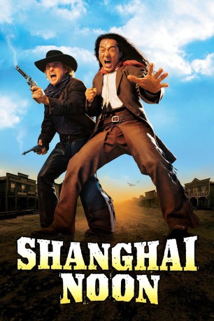

#460 Shang-High Noon
Alternativ: Shanghai Noon
 
 IMDB-Wertung: 6.6 / 10
IMDB-Wertung: 6.6 / 10  Metascore: 77
Metascore: 77 
Die chinesische Prinzessin Pei Pei wird im Jahre 1881 von dem Schurken Lo Fung entführt. Ihr Leibwächter Chong Wang macht sich auf, um sie zu befreien. Unterwegs gesellt sich der Wanderer Roy zu ihm, und gemeinsam schlagen sie sich durch den Wilden Westen, meistern Begegnungen mit brutalen Kopfjägern, Indianern und Chinesen…
Jahr: 2000
Dauer: 110 Minuten
FSK: 12
Land: USA Studio: Buena Vista Pictures DistributionTonspuren: DTS - ,
Untertitel:
Auflösung: 1080p (1920x1080) Größe: 10752 MB
Genre: Action, Abenteuer, Komödie, Western
Regisseur:  Tom Dey
Tom Dey
Drehbuch: Miles Millar, Alfred Gough
Soundtrack: Randy Edelman
Darsteller:
 Jackie Chan als Chon Wang
Jackie Chan als Chon Wang Owen Wilson als Roy O'Bannon
Owen Wilson als Roy O'Bannon Lucy Liu als Princess Pei Pei
Lucy Liu als Princess Pei Pei- Brandon Merrill als Indian Wife
 Roger Yuan als Lo Fong
Roger Yuan als Lo Fong Xander Berkeley als Van Cleef
Xander Berkeley als Van Cleef Rongguang Yu als Imperial Guard
Rongguang Yu als Imperial Guard- Eric Chen als Imperial Guard
- Jason Connery als Andrews
 Walton Goggins als Wallace
Walton Goggins als Wallace Adrien Dorval als Blue
Adrien Dorval als Blue Stacy Grant als Hooker in Distress
Stacy Grant als Hooker in Distress- Kate Luyben als Fifi
 Simon Baker als Little Feather
Simon Baker als Little Feather- Sam Simon als Chief's Sidekick
 A.C. Peterson als Saddle Rock Sheriff
A.C. Peterson als Saddle Rock Sheriff- Rad Daly als Saddle Rock Deputy
- Stephen Strachan als Van Cleef Deputy
- Rick Ash als Jedadiah
- Valerie Planche als Jedadiah's Wife
 Jim Shield als Saloon Gambler
Jim Shield als Saloon Gambler Mike Mitchell als Saloon Gambler
Mike Mitchell als Saloon Gambler- Andrew Krivanek als Carson City Townfolk
 Jody Thompson als Margie
Jody Thompson als Margie- Eliza Norbury als Dream Sequence Hooker
- Christy Greene als Train Passenger
 Tseng Chang als Pei Pei's Father
Tseng Chang als Pei Pei's Father- Olivia Cheng als Dim Sum Girl #1 , uncredited
- Archie Kan als Extra , uncredited
- Tong Lung als Chinese Worker , uncredited
- Ya Hi Cui als Imperial Guard
- Rafael Báez als Vasquez
- Henry O als Royal Interpreter
- Russell Badger als Sioux Chief
- Lee Jay Bamberry als Van Cleef Deputy
- Tim Koetting als Van Cleef Deputy
 Tom Heaton als Saloon Bartender
Tom Heaton als Saloon Bartender- James Baker als Saloon Gambler
- Shayne Wyler als Saloon Gambler
- Ben Salter als Saddle Rock Townfolk
- Terry King als Saddle Rock Townfolk
- Michelle Fansett als Saddle Rock Townfolk
- Joyce Doolittle als Carson City Townfolk
- Randy Birch als Carson City Townfolk
- Christopher Hunt als Apothecary Shopkeeper
- Kendall Saunders als Dream Sequence Hooker
- Andrew Bosch als Train Passenger
- Brian Gromoff als Train Passenger
- Jim Finkbeiner als Train Passenger
- Sherman Chao als Emperor's Cousin
Datei: X:\2-Dilogie(N-Z)\Shanghai Noon\Shang-High Noon (2000, FSK12, 1920x1080).mkv seit 25.02.2015
Festplatte: HD Collection-2(A-Z)-3(A-M)
 Alle Filme aus Gruppe '2-Dilogie(N-Z)\Shanghai Noon'
Alle Filme aus Gruppe '2-Dilogie(N-Z)\Shanghai Noon'